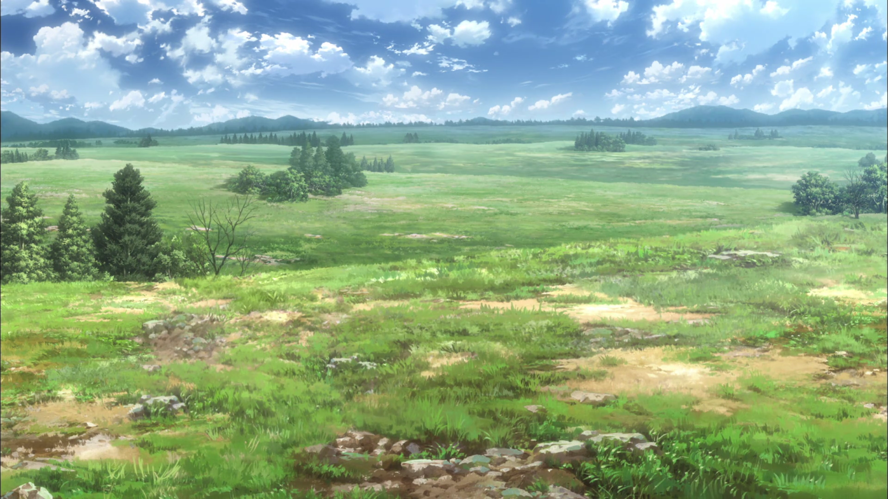
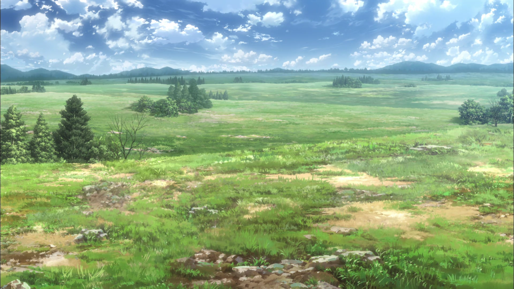
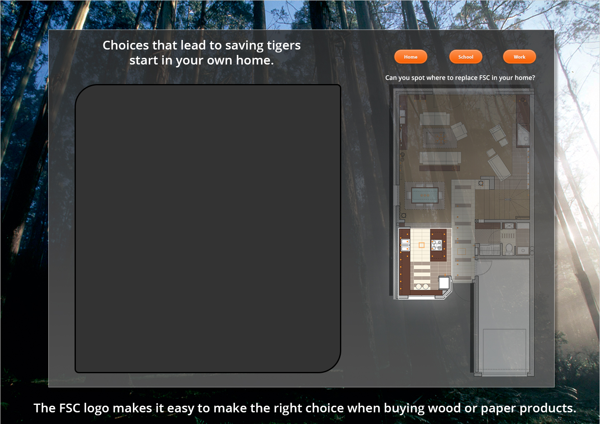
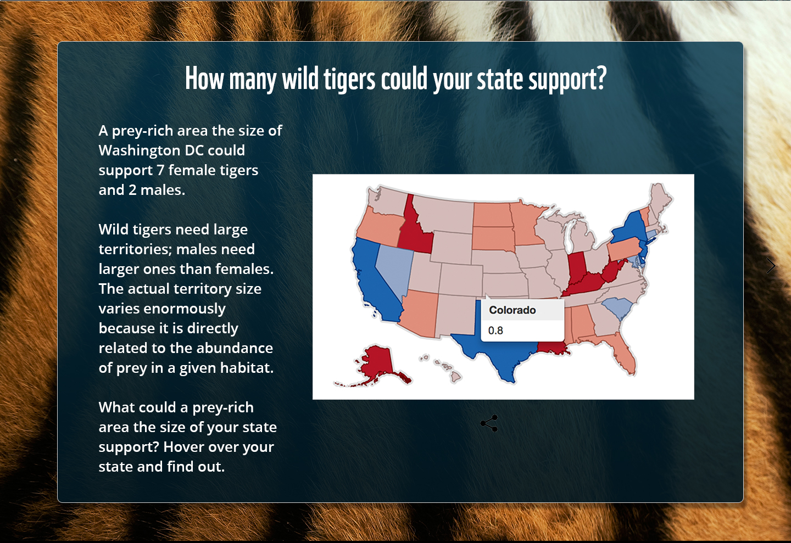

The Way of a Monk
My Capstone project for 2015
Although I love front end design, my passion is video games. So for my capstone I teamed up with Frankling Zhang to create a video game from scratch. One of the reasons I really like video game design is because I believe that it takes a bit of every art medium and mashes them all together in an interactive package. With video games you get art, sound, animation, story telling, philosphy, and countless others. The ability to take inspiration from everywhere in life is amazing. I enjoyed this project so much, I would love to keep working on it, but sadly this was a one off. I hope you enjoy!
If you would like to check out a video which shows the final project, please click on the video to the left. It is a basic walk through of some of the ideas and concepts which we thought would make for a compelling game.
My job in the game was to facilitate the game design process. I also worked on the lighting, particles, as well as the ping system was developed by me. Franklin Zhang was director and also took care of the art, while Ebby Wahman helped with coding and general issues with Unity
Project Highlights

 

Art Inspirations
One of the first tasks we had was to try to nail down the type of colors and art style we wanted to use. At some point someone mentioned that a water color style might work. We also tried to go with bright appealing colors during the day, because at some points the user would be in complete darkness. The light world must stand out to have the greatest impact.

Interactive Floor-Plan Mockup
Our group was dead set on including some interactive elements in the site. The first one we decided on was an interactice floor plan which would allow users to see where FSC related products could be found in their home, office, or school.

Interactive Floor-Plan Mockup
The second interactive element for this project included an interactive map of the US which we hoped would express how much actual area a tiger needs inorder to live, hunt, and mate. For this elements we used a really awesome online tool for visualizations called datawrapper. It was really useful, and added a nice touch to the site.